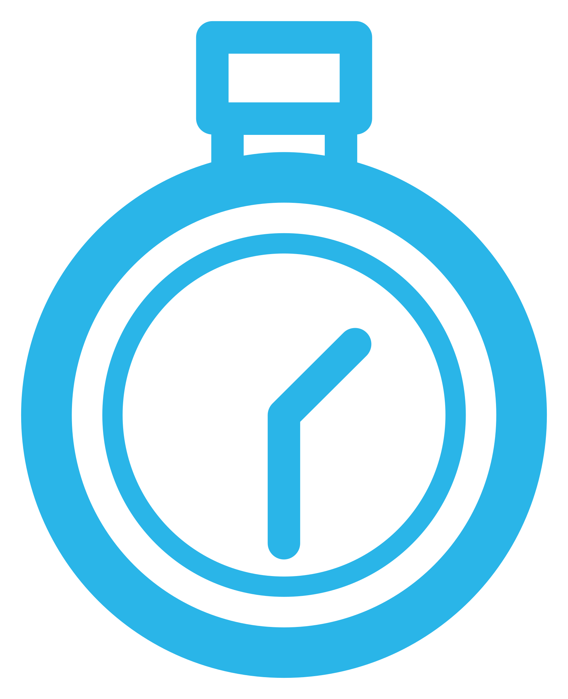

×
Hackathon · Friday 6 November 2026
What if anyone at TVM could just ask the data?
4 teams, real TVM data, one business question each. By 15:00 every team has a working Talk2YourData MVP: a governed AI agent that answers in plain English in Snowflake CoWork and in Claude Code over MCP, and that TVM keeps building on after today.

09:30 – 15:00